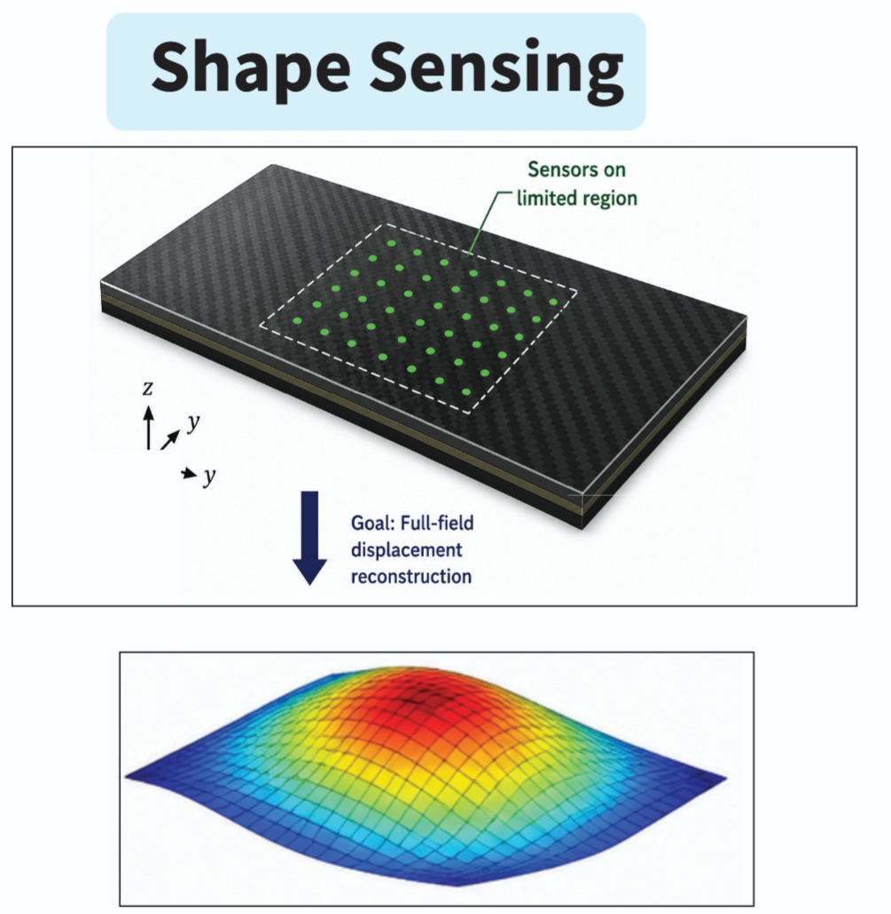
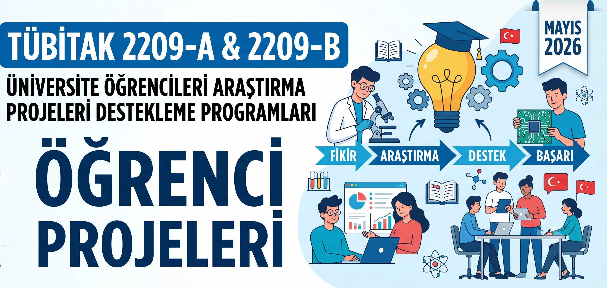

Homepage Introduction

Saeed Lotfan
Assistant Professor at
Gebze Technical University
Department of Mechanical Engineering
About
I am an Assistant Professor in the Department of Mechanical Engineering at Gebze Technical University. I earned my B.S., M.S., and Ph.D. degrees in Mechanical Engineering at University of Tabriz, Tabriz, Iran in 2012, 2014, and 2018, respectively. I later joined Sabancı University in Istanbul, Turkey as a postdoctoral researcher.
Research Summary
My primary research interests center on mechanical vibrations, with a particular emphasis on both linear and nonlinear systems. I focus on the development of advanced mathematical models and efficient numerical methods to accurately characterize the complex dynamic behavior of structural systems. My work further encompasses reduced-order modeling in nonlinear mechanics, signal processing for inverse problems and structural health monitoring, computational mechanics for high-fidelity simulations, and the integration of machine learning techniques into these domains.
01 Trajectory
Academic & Education Timeline
Vibration and Modal Analysis Lab.
02 Latest
News

2026

2026

2026

2025

2025

2025

2025

2024

2024
Congratulations to our dedicated team members Muratcan Çalış, Mustafa Kaan Bostancıoğlu, Gediz Bal, Oğuzhan Emre Sağır, Muhammed Talha Kara, Muhammed Eren Tıraş, Fatih Mehmet Karkınlı, and team captain Eren Kalyoncu for their outstanding efforts and perseverance throughout the project.

2024

2024

2024

2023

2023

2022

2021